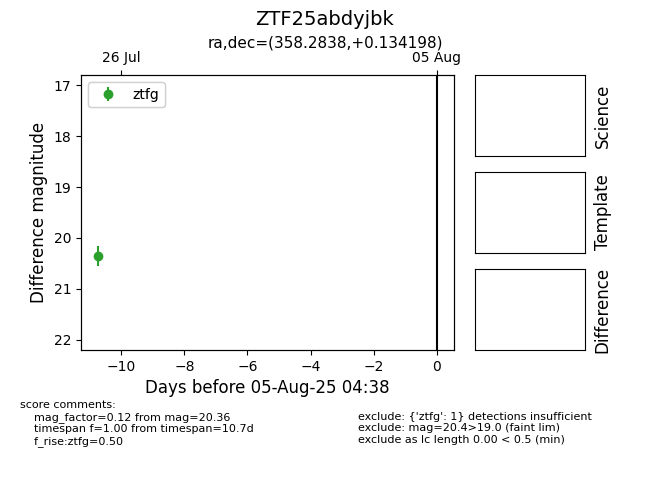

Target ZTF25abdyjbk at 2025-08-05 04:38, see:
FINK: fink-portal.org/ZTF25abdyjbk
Lasair: lasair-ztf.lsst.ac.uk/objects/ZTF25abdyjbk
ALeRCE: alerce.online/object/ZTF25abdyjbk
alt names
ZTF25abdyjbk (ztf,fink)
coordinates:
equatorial (ra, dec) = (358.2838,+0.13420)
galactic (l, b) = (93.3537,-59.34739)
photometry
last ztfg=20.36
1 ztfg detections
